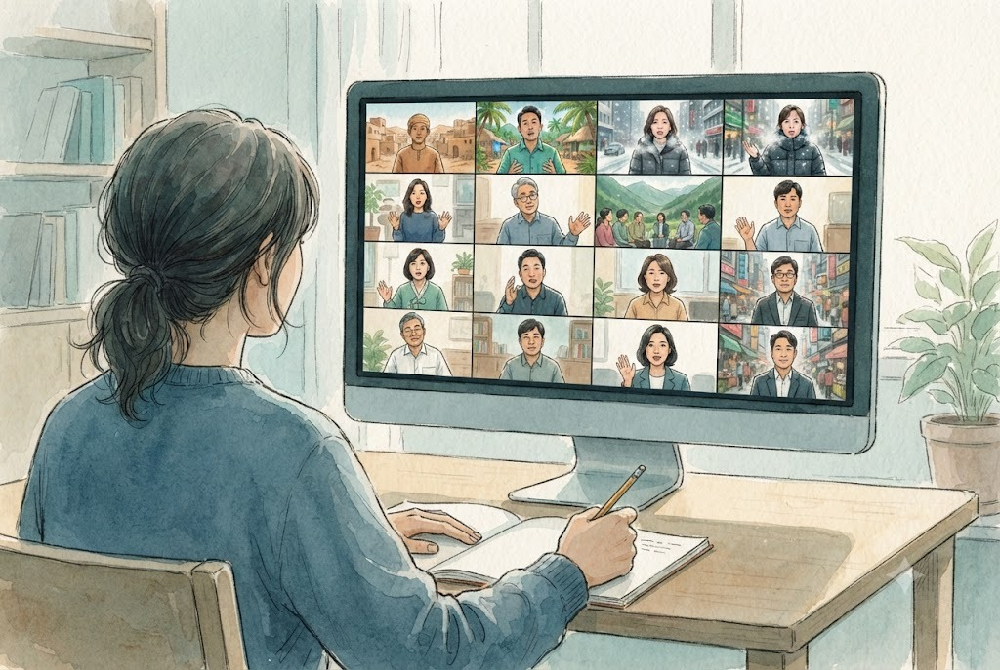
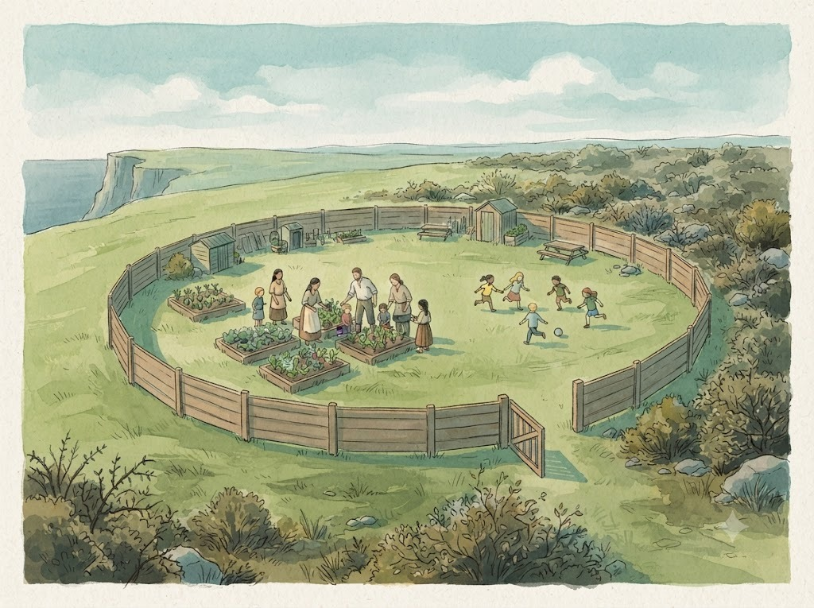
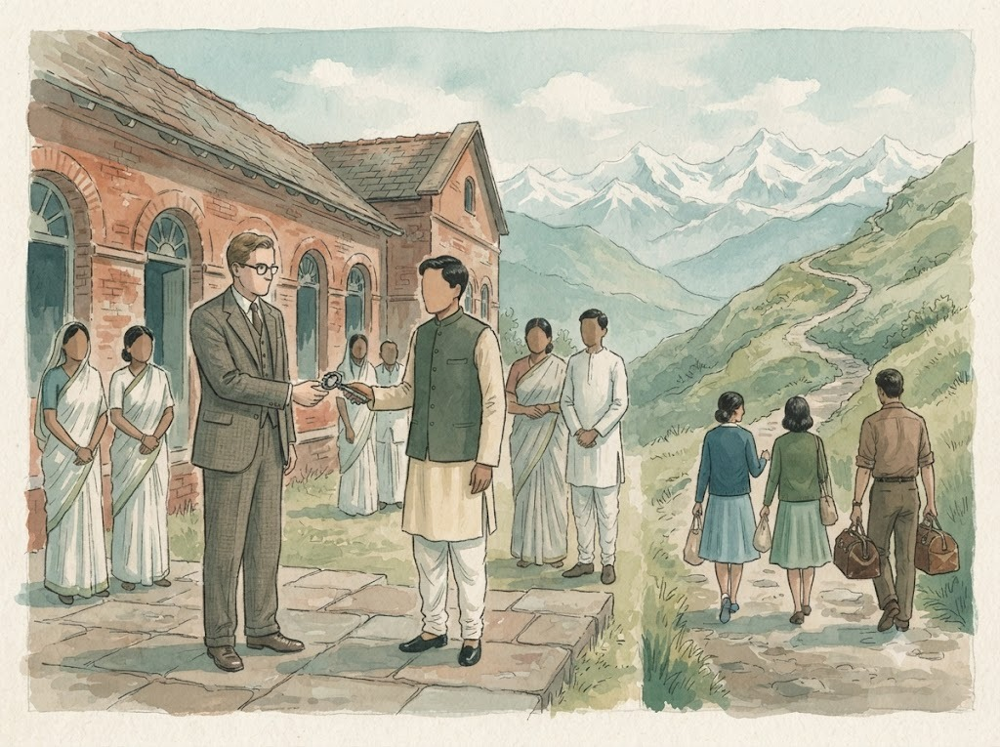

지금 꼭 이 이야기가 필요한가
2024년 1월, 인터서브코리아 파트너 예순 명 남짓이 이틀에 나누어 모였습니다. 모임의 이름은 「파트너 재정 책무와 필드 재산권」이었고, 저는 그 자리에서 재산권 이야기를 맡았습니다. 발제가 끝나고 소그룹으로 나뉘었는데, 한 조에서 이런 물음이 나왔다고 합니다. 재산권 이야기가 지금 꼭 필요한가.
본부 쪽에서 돌아간 대답은 짧았습니다. 무슨 일이 생겨서 모인 것이 아니다, 필드의 이야기를 먼저 듣고 싶어서 모였다. 다른 조에서도 본부 쪽이 같은 설명을 했습니다. 아직 큰 사고는 없었으니, 지금 미리 규칙을 만들어 두는 편이 낫다는 것이었습니다.
이 연재의 첫 글 제목을 거기서 가져왔습니다. 선교지 재산 이야기는 대개 사고가 난 뒤에 시작합니다. 선교사가 은퇴할 무렵, 건물을 두고 현지 동역자와 파송교회와 선교사의 기억이 서로 다르다는 것이 드러날 때, 그제야 모두가 자리에 앉습니다. 그때는 이미 관계가 상해 있습니다. 우리는 그 순서를 거꾸로 해 보고 싶었습니다. 사고가 나기 전에, 서로 얼굴을 붉힐 일이 없을 때 이야기를 시작하자는 것이었습니다.
시작은 재정 책무였다
처음부터 재산권을 들여다본 것은 아니었습니다. 인터서브코리아는 그보다 몇 해 앞서 파트너의 재정 책무를 다듬고 있었습니다. 흩어져 있던 후원금을 하나로 모아 정산하고, 생활비와 목적이 있는 헌금을 나누고, 보고를 쉽게 하는 일이었습니다. 그 일을 하다 보면 결국 이런 질문에 닿습니다. 후원금으로 산 땅과 지은 건물은 어떻게 하는가.
물려받을 규칙이 없으니 우리가 만들어야 했습니다.
2022년 봄, 본부는 국제 인터서브에 물었습니다. 필드에서 부동산을 사는 일에 대한 정책이 있느냐고. 답은 국제 차원에서 함께 쓰는 정책은 없고, 일이 생길 때마다 나라별 본부가 각자 다룬다는 것이었습니다. 물려받을 규칙이 없으니 우리가 만들어야 했습니다.
그해 가을 이사회가 작은 실무팀(TFT)을 꾸렸습니다. 처음에는 셋이었고, 저도 그 가운데 하나였습니다. 처음 한 일은 공부였습니다. 다른 선교단체와 교단은 이 문제를 어떻게 다뤄 왔는지, 방콕포럼과 한국선교지도자포럼과 선교 학술지에 어떤 사례가 쌓여 있는지 읽었습니다. 읽을수록 분명해지는 것이 있었습니다. 한국 선교가 서른 해, 마흔 해를 지나면서 개척 세대의 은퇴가 시작되었고, 그분들이 평생 일군 학교와 병원과 센터가 이제 「누구의 것인가」라는 질문 앞에 서 있다는 것입니다. 문제는 사람이 나빠서 생기지 않았습니다. 처음에 아무도 마지막을 이야기하지 않았기 때문에 생겼습니다.
먼저 들었다

그래서 규칙을 쓰기 전에 들었습니다. 1월의 공청회에 이어 2024년 봄에는 모든 파트너 유닛에 설문을 보냈습니다. 백 유닛 가운데 일흔세 유닛이 답해 주었습니다. 초안을 쓴 뒤에도 가을에 한 번 더 공청회를 열어 의견을 받았습니다.
공청회에서 들은 것은 박수만이 아니었습니다. 최소한의 권고 정도로 해 달라는 부탁이 있었습니다. 모금은 개인이 다 했는데 관리와 소유는 공동체의 몫이라는 말이 잘 이해되지 않는다는 솔직한 반문도 있었습니다. 필드의 의견을 충분히 들은 뒤에 만들어 달라는 당부, 그리고 이 문제는 본부 혼자 정할 일이 아니니 파송교회와 교단과 본부가 함께 앉는 자리가 있어야 한다는 제안도 나왔습니다. 돌아보면 최소한의 경계만 긋자는 원칙은 그 자리에서 나온 부탁에 빚지고 있습니다.
설문은 다른 것을 보여 주었습니다. 센터와 학교와 병원, 기숙사와 공방과 농장까지, 땅이나 건물을 사거나 짓거나 기증받은 경험을 적어 낸 응답이 적지 않았습니다. 앞으로 사거나 지을 계획을 적은 응답도 열 건이 넘었습니다. 그런데 지금 가진 것을 앞으로 처분할 계획이 있느냐는 물음에는 거의 모두가 「없다」였거나 칸을 비워 두었습니다. 「있다」는 한 명이었습니다. 팔 생각이 없다는 뜻이었을 것입니다. 그 아래, 언젠가 처분하게 된다면 어떻게 하겠느냐는 물음에는 몇 분이 현지에 넘기겠다거나 현지 이사회의 결정에 따르겠다고 적었습니다.
시작에 대한 기록은 많았지만, 마지막에 대한 이야기는 짧았습니다.
시작에 대한 기록은 많았지만, 마지막에 대한 이야기는 짧았습니다. 탓할 일은 아닙니다. 저라도 그랬을 것입니다. 한창 짓고 있는 사람에게 마지막을 묻는 것은 어색한 일입니다. 다만 그 마지막 이야기를 언젠가는 누군가와 함께 정해야 한다는 것, 그리고 그때가 은퇴 직전이면 너무 늦다는 것을 우리는 알게 되었습니다.
울타리를 만들다

2024년 여름부터 가이드라인 초안을 쓰고 여러 차례 고쳤습니다. 고칠 때마다 처분과 이양을 다루는 부분이 두꺼워졌습니다. 규칙이 파트너에게만 향하지 않도록, 본부가 해야 할 숙제를 따로 한 장(章)에 모아 적기도 했습니다. 그해 11월 이사회가 초안을 받아들였고, 실무팀은 「현지 재산권위원회」라는 이름을 얻었습니다. 다음 해 총회에서 첫 판(α)이 완성되었다고 보고했습니다.
우리는 자유로 옮겨 가는 것이 아니라 언약 관계로 옮겨 가는 것입니다.
가이드라인을 설명할 때 저는 부모 역할의 세 유형을 빌려 왔습니다. 통제형 부모는 아이 둘레에 아주 작은 원을 그립니다. 방치형 부모는 원을 그리지 않습니다. 민주형 부모는 아이의 나이에 맞게 넉넉한 원을 그리고, 원 밖의 위험으로부터 아이를 지켜 주고, 원 안에서는 마음껏 움직이게 합니다. 처음 이 비유를 쓴 공청회에서, 파트너 선생님들을 자녀로 여겨서 하는 말이 아니니 오해하지 마시라고 덧붙였던 기억이 납니다. 말하고 싶었던 것은 이것이었습니다. 동산의 모든 열매를 먹되 한 가지만 먹지 말라고 하신 것처럼, 가장 작은 울타리만 긋겠다는 것. 원의 테두리가 없는 것이 자유처럼 보일 수 있지만, 우리는 자유로 옮겨 가는 것이 아니라 언약 관계로 옮겨 가는 것입니다.
그 울타리의 뼈대는 세 가지입니다. 첫째, 후원금으로 생긴 것은 맡겨진 공적 자산이라는 것. 생활비 안에서 아낀 저축이나 집안의 유산처럼 선교사 개인의 몫은 분명히 보호하되, 후원으로 생긴 것은 개인의 것으로 돌리지 않습니다. 둘째, 그 공적 자산에 관한 중요한 결정은 혼자 하지 않는다는 것. 선교사와 파송교회와 선교단체, 적어도 세 자리가 함께 정합니다. 셋째, 마지막은 은퇴 직전이 아니라 처음에 설계한다는 것. 이 셋을 공공성과 합법성과 투명성, 그리고 구조성과 유연성과 역사성이라는 여섯 가지 가치로 풀어 썼습니다. 바깥 원의 세 가치가 지키는 일을 하고, 안쪽의 세 가치가 숨 쉴 자리를 만듭니다.
낯선 길이 아니다

이 일을 하면서 위로가 된 것은, 이것이 인터서브에게 낯선 길이 아니라는 사실이었습니다. 인터서브의 오랜 이름들은 그 자체로 내려놓음의 기록입니다. 1957년, 백 년 넘게 인도에서 일해 온 이 선교회는 「선교회(Mission)」라는 이름을 내려놓고 「협회(Fellowship)」가 되었습니다. 그때의 논거가 지금 읽어도 날카롭습니다. 과거의 「선교회」가 통제를 의미했다면 이는 사라져야 한다는 것입니다.1
이양은 후퇴가 아니라 새로운 개척의 전제였습니다.
말만 바꾼 것이 아니었습니다. 인도의 의료 사역을 인도의 동역자들이 점점 더 많이 맡아 가고 있었기에, 네팔의 문이 열렸을 때 이 선교회의 의료 사역자들은 그리로 자유롭게 갈 수 있었습니다. 그리고 1973년에는 인도에 남아 있던 학교와 고아원과 성경협회 센터 같은 자산까지 현지의 기독교 의료교육 협회에 넘겼습니다. 책은 그것이 거기에 생을 바친 모든 이에게 감동적인 순간이었다고 적고 있습니다.1 손을 펴야 다음 땅으로 갈 수 있었던 것입니다. 이양은 후퇴가 아니라 새로운 개척의 전제였습니다.
우리가 쓴 가이드라인은 열두 쪽짜리 작은 문서입니다. 그래도 그 안에 담으려 한 질문은 반세기 전 선배들이 붙들었던 질문과 같습니다. 이것은 누구의 것인가를 묻는 대신, 이것은 무엇을 위한 것인가를 묻는 것입니다.
울타리를 만들었으니 이제 그것을 들고 파트너 곁에 앉을 차례였습니다. 울타리가 받는 쪽에서는 담장처럼 보일 수 있다는 걱정을 우리는 짐작하고 있었고, 거기서 그 걱정과 정면으로 마주했습니다. 다음 글은 그 이야기입니다.
인용·출처
- 1Elizabeth A. Tebbe·인터서브코리아 30주년 출판위원회, 『인터서브의 선교 역사 (1852–2020) — 닫혔던 문을 열고 일상으로』, p.33–34. 1957년 명칭 변경(BMMF)과 1973년 자산 이양의 경위.